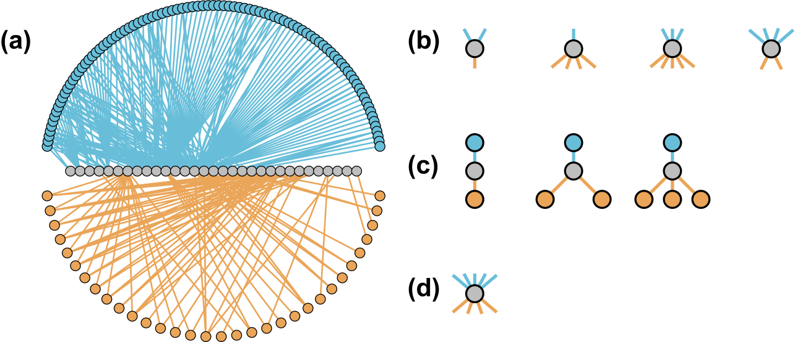
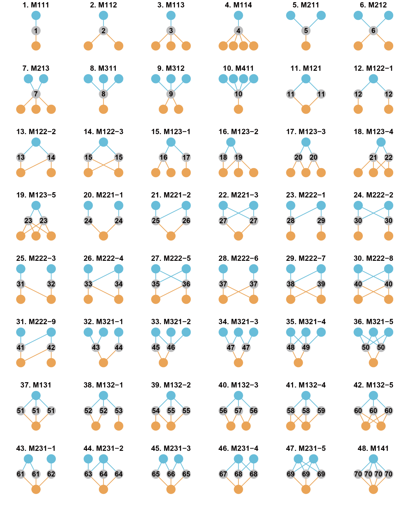

ILSM is designed for analyzing interconnection structures including interconnection patterns, centrality and motifs in tripartite interaction networks.
The figure below shows an example tripartite interaction network (a, with three groups of species and two interaction layers, showing two common forms) and interconnection structures (b, interconnection pattern, c, interconnection motif, d, interconnection centrality). Different colors of nodes indicate different groups of species, and the dashed lines indicate the connector species. In panel a, the connector species in the left panel were indicated by dashed links, and those in the right panel have links from both layers.

Installation
You can install the development version of ILSM from GitHub:
devtools::install_github("WeichengSun/ILSM")Interconnection motifs

The figure below shows the 48 forms of interconnection motifs with 3-6 nodes. Blue and grey nodes form one layer, and grey and orange nodes form the other layer. Grey nodes are connector nodes. The motifs are named “MABC-i”: M means “motif’,”A” is the number of a-nodes, “B” is the number of b-nodes, “C” is the number of c-nodes and “i” is the serial number for the motifs with the same “ABC”. The interconnection motifs are ordered by the number of connector nodes (from 1 to 4). The numbers from 1 to 70 in connector nodes represent the unique roles.
Example
This is an example showing the uses of different functions:
library(ILSM)
## generate a random tripartite network
set.seed(12)
Net <- build_net(11,15,16,0.2)# This function creates a two-layered network with 11,15, 16 nodes in three groups and the connectivity is 0.2
##Or use a pollinator-plant-herbivore network from Villa-Galaviz et. al. 2020. Journal of Animal Ecology.
data(PPH_Coltparkmeadow)
Net <- PPH_Coltparkmeadow
## calculate the frequency of interconnection motifs
icmotif_count(Net)
##the roles of connector node within interconnection motifs
icmotif_role(Net)
## Five interconnection patterns
poc(Net)
coid(Net)
cois(Net)
pc(Net)
hc(Net)
## connector nodes' interconnection centrality
node_icc(Net)References
Simmons, B. I., Sweering, M. J., Schillinger, M., Dicks, L. V., Sutherland, W. J., & Di Clemente, R. (2019). bmotif: A package for motif analyses of bipartite networks. Methods in Ecology and Evolution, 10(5), 695-701.
Mora, B.B., Cirtwill, A.R. and Stouffer, D.B., 2018. pymfinder: a tool for the motif analysis of binary and quantitative complex networks. bioRxiv, 364703.
Domínguez-García, V., & Kéfi, S. (2024). The structure and robustness of ecological networks with two interaction types. PLOS Computational Biology, 20(1), e1011770.
Sauve, A. M., Thébault, E., Pocock, M. J., & Fontaine, C. (2016). How plants connect pollination and herbivory networks and their contribution to community stability. Ecology, 97(4), 908-917.
Pilosof, S., Porter, M. A., Pascual, M., & Kéfi, S. (2017). The multilayer nature of ecological networks. Nature Ecology & Evolution, 1(4), 0101.
Domenico, M. D. 2022. Multilayer Networks: Analysis and Visualization. Introduction to muxViz with R. . Springer, Cham.
Citation
Manuscript is being prepared for submission and citations are currently available at CRAN 10.32614/CRAN.package.ILSM